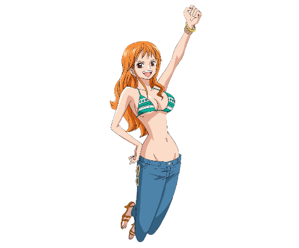
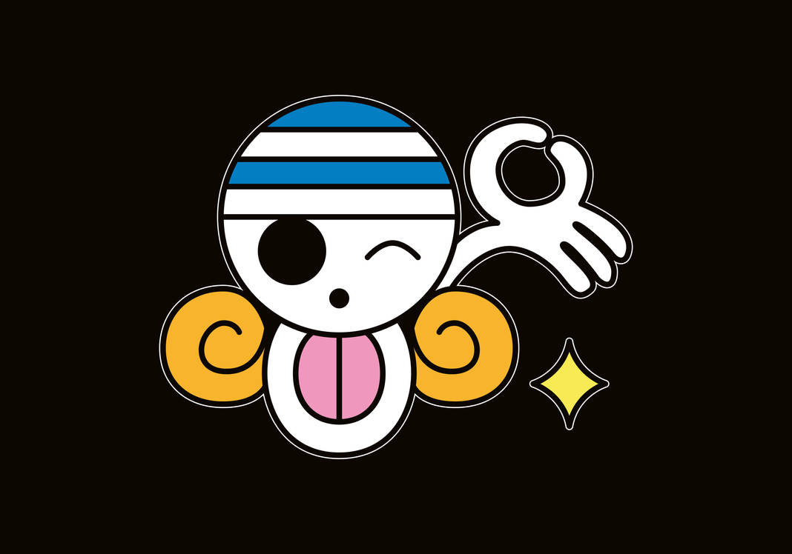

Nami
Gata LadraA "Gata Ladra" Nami é a navegadora dos Piratas do Chapéu de Palha. Ela foi o terceiro membro da tripulação e a segunda a entrar, fazendo-o durante o Arco Orange Town. Ela é a irmã adotiva de Nojiko, desde que as duas ficaram órfãs e foram levadas por Bell-mère. Ela era anteriormente membro dos Piratas do Arlong e juntou-se inicialmente aos Chapéus de Palha com a intenção de roubá-los, mas se tornou de fato um dos Chapéus de Palha depois que eles se rebelaram e derrotaram Arlong.
Seu sonho é fazer um mapa do mundo inteiro.
Ela atualmente tem uma recompensa de 366.000.000. Nami é considerada pela marinha uma dos comandantes do Luffy, seguindo a lógica da sua recompensa a 8° Comandante.
Nami é uma jovem esbelta de estatura média, com cabelo laranja e olhos castanho claros. Muitas pessoas a consideram muito atraente ou mesmo bonita. Ela tem uma tatuagem preta (azul no anime) em seu ombro esquerdo, que representa laranjeiras e cata-ventos (uma homenagem a Bell-mère, Nojiko e Genzo, respectivamente), onde ela costumava ter uma tatuagem para ser um membro da tripulação de Arlong.
"A vida é como um lápis que certamente se esgotará, mas deixará a bela escrita da vida."
- Local de origem: East Blue
- Residência: Vila Cocoyasi
- Aniversário: 3 de Julho
- Tipo Sanguíneo: X
- Primeira aparição: Capítulo 8; Episódio 1
- Estado: Vivo
Seu físico geral amadureceu de repente (embora seja, provavelmente, uma simples mudança no estilo de obras de arte). Sua forma muda frequentemente assim como seu estilo de cabelo. Muitas de suas camisas caracterizam palavras de quatro letras, como "MODE", "GOLD" ou "EVIL", semelhante a uma camisa que Bell-mère usava tinha como estampa a palavra "MACE" nela.
No pulso esquerdo, ela usa o Log Pose, que ela precisa para ser a navegadora do navio, e uma pulseira de ouro, dada a ela por sua irmã, Nojiko.